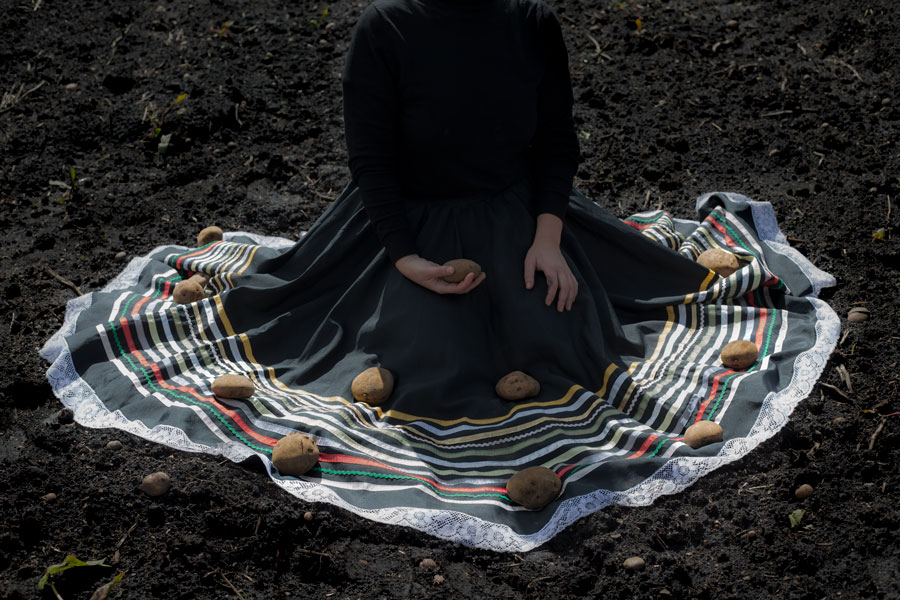
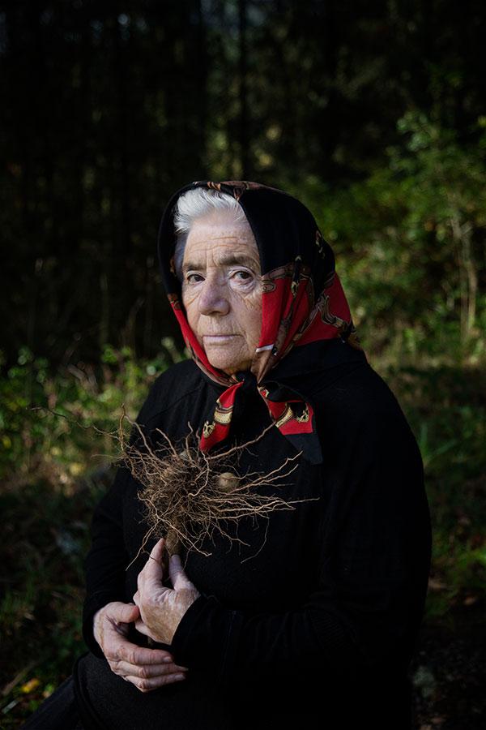

When I say potato, you say
Latin America's star food crop

© Ana Núñez Rodríguez
Grandma's main cooking ingredient

© Ana Núñez Rodríguez

Native to the Americas, the potato was taken to Europe by the Spanish conquerors by the middle of the 16th century.
Over the course of two centuries, it became one of the main ingredients of many local cuisines,
touching societies worldwide.
That's how it made it to your grandma's recipe book.
Over the course of two centuries, it became one of the main ingredients of many local cuisines,
touching societies worldwide.
That's how it made it to your grandma's recipe book.
Continue